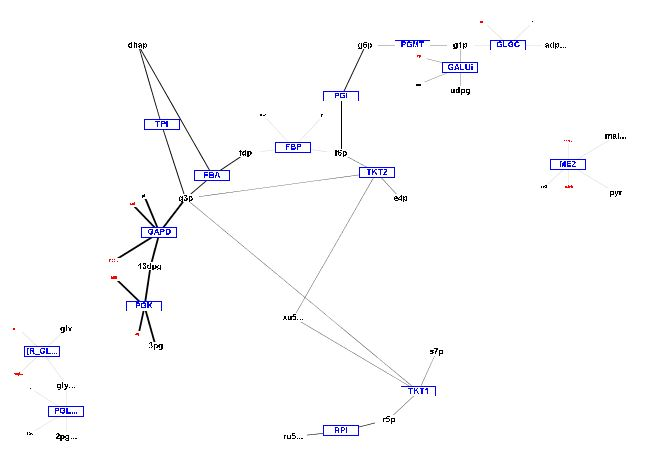
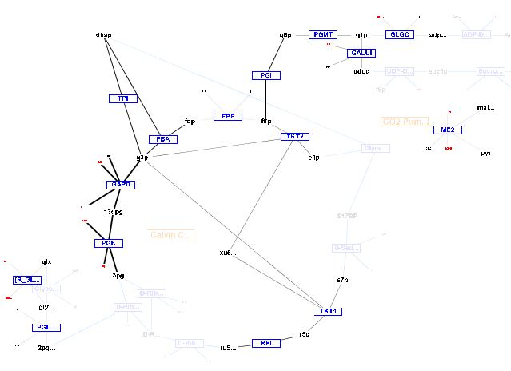
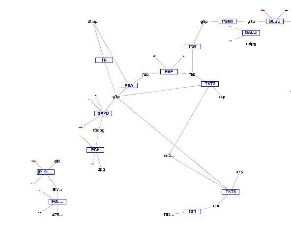

Metabolic Optimization and Simulation Tool
|
Help Topics
|
Visualization Options Select Options –> Visualization Options -> (Alt+V then Alt+V) to view Visualization options. A portion of a graph using the Graph All Reactions and Metabolites in Database option. Notice reactions not found in model are shown in subdued colors. Graph All Reactions and Metabolites in Database: Select Options –> Visualization Options -> Graph All Reactions and Metabolites in Database (Alt+O then Alt+V then Alt+G). The default setting in for visualization is to graph the reactions found in the selected compartment of the loaded model. However, when building a model, it may be helpful to see all reactions in the database. Selection of this option will visualize all reactions in the database, and reactions not present in the model will be drawn using subdued colors.  A portion of a graph using default setting.  A portion of a graph using the "Graph All Reactions and Metabolites in Database" option. Notice reactions not found in model are shown in subdued colors. Scale Edge Thickness Using Flux Values: Select Options –> Visualization Options -> Scale Edge Thickness Using Flux Values (Alt+O then Alt+V then Alt+S). The default setting in for visualization is to scale edge thicknesses using flux values. Selection of this option will result in edges for all reactions found in the model to be the same thickness.  A portion of a graph with "Scale Edge Thickness Using Flux Values" unchecked. Ignore Water for Reaction Matching: Select Options –> Visualization Options -> Ignore Water for Reaction Matching (Alt+O then Alt+V then Alt+W). Water is commonly omitted in reactions. Selecting the ignore water option will allow comparison with reactions in the database to be considered a match if water is not found in the reaction. For example a reaction A --> B + C will be graphed as reaction A + H2O --> B + C using this option. Select Options –> Visualization Options -> Show Visualization Report (Alt+O then Alt+V then Alt+R). The default setting in for visualization is to show a report listing reactions in three categories: reactions found in the model that are not present in the database, reactions where one or more metabolite does not have an identifier (KEGG id or CHEBI id), and reactions that have been graphed. Deselect this option to prevent this report from being shown when visualizing. The report can be viewed while visualizing by selecting Visualization --> Show Visualization Report (Alt+V then Alt+Z). |